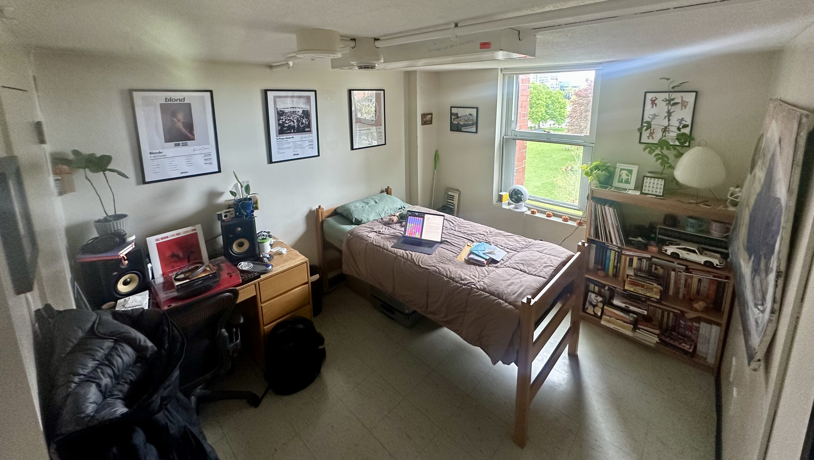

This project was done as the final project for my What is The Good Life? Popular Culture and Narrative class, and is supposed to communicate what I think the good life is.
What is the good life? is a question I’ve wrestled with a lot, and to be to honest, I still feel quite far from finding a solid answer. I might even be further from an answer than I was at the beginning of the course.
And what do we do when theory is lacking? Look empirically!
So the following is a short tour of my room in which I’ll briefly analyze how some of the items I own portray what I believe to be the good life, whether I like it or not. That is, I'll be reflecting on how some of the things in my life don't necessarily line up with that I would claim to be the good life. As you’ll soon realize there is currently quite a bit of conflict between the different sides of me, which is likely the cause for my struggle to answer this great question in a satisfying way.
Perhaps, that is what the good life is: finding balance in the things you love. But until I find that balance, I’ll find what I love and let it kill me.
A note on the photo: the only staging I did was putting my laptop and some letters on my bed. Everything else is where it was naturally.

Hover the glowing objects.